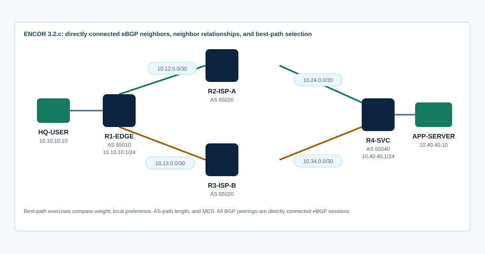

Overview
This lab targets ENCOR 3.2.c: configure and verify eBGP between directly connected neighbors, including neighbor relationships and the best-path selection algorithm. You will build four eBGP adjacencies, advertise enterprise and service prefixes, validate the BGP table versus the routing table, and change the selected path using multiple policy methods.
The focus is enterprise-edge BGP depth, not a full service-provider design. The topology intentionally avoids iBGP, route reflectors, confederations, MPLS, and loopback eBGP multihop so the core behavior stays aligned with the exam topic.
Topology
R1-EDGE represents the enterprise edge in AS 65010. R2-ISP-A and R3-ISP-B are directly connected provider edge routers in AS 65020. R4-SVC is a service edge in AS 65040. The two provider paths carry the same service prefixes so R1 can compare BGP attributes and choose a best path.

Task 1: Baseline the Underlay
Confirm every physical link is up before starting BGP. eBGP does not fix a bad directly connected path; the TCP session depends on basic IP reachability to the neighbor address.
show ip interface brief
show cdp neighbors detail
show ip route connected
ping 10.12.0.2
ping 10.13.0.2
ping 10.24.0.2
ping 10.34.0.2Document the AS plan:
| Device | AS | Direct eBGP Neighbors | Prefixes to Advertise |
|---|---|---|---|
| R1-EDGE | 65010 | R2 10.12.0.2, R3 10.13.0.2 | 10.10.10.0/24 |
| R2-ISP-A | 65020 | R1 10.12.0.1, R4 10.24.0.2 | Transit only |
| R3-ISP-B | 65020 | R1 10.13.0.1, R4 10.34.0.2 | Transit only |
| R4-SVC | 65040 | R2 10.24.0.1, R3 10.34.0.1 | 10.40.40.0/24, 198.51.100.0/24 |
Task 2: Configure Directly Connected eBGP Neighbors
Build eBGP neighbor relationships using the directly connected interface addresses. Do not use loopback peering or ebgp-multihop for this lab.
! R1-EDGE
router bgp 65010
bgp log-neighbor-changes
neighbor 10.12.0.2 remote-as 65020
neighbor 10.13.0.2 remote-as 65020
!
! R2-ISP-A
router bgp 65020
bgp log-neighbor-changes
neighbor 10.12.0.1 remote-as 65010
neighbor 10.24.0.2 remote-as 65040
!
! R3-ISP-B
router bgp 65020
bgp log-neighbor-changes
neighbor 10.13.0.1 remote-as 65010
neighbor 10.34.0.2 remote-as 65040
!
! R4-SVC
router bgp 65040
bgp log-neighbor-changes
neighbor 10.24.0.1 remote-as 65020
neighbor 10.34.0.1 remote-as 65020Depth check: IOS XE may show classic IPv4 unicast behavior by default, or it may require explicit activation under address-family ipv4 unicast depending on platform defaults and templates. If a neighbor is established but sends no IPv4 routes, check whether the neighbor is activated in the address family.
Task 3: Advertise Enterprise and Service Prefixes
Advertise only intentional prefixes. BGP network statements require an exact matching route in the local routing table; they do not enable BGP on an interface like OSPF network statements do.
! R1-EDGE
router bgp 65010
network 10.10.10.0 mask 255.255.255.0
!
! R4-SVC
router bgp 65040
network 10.40.40.0 mask 255.255.255.0
network 198.51.100.0 mask 255.255.255.0Verify route propagation from both ends. The BGP table may contain more paths than the IP routing table because only the selected best path is installed for forwarding.
show bgp ipv4 unicast summary
show bgp ipv4 unicast
show bgp ipv4 unicast 10.40.40.0/24
show bgp ipv4 unicast 198.51.100.0/24
show ip route bgp
show ip route 198.51.100.0
ping 10.40.40.10 source 10.10.10.1
traceroute 10.40.40.10 source 10.10.10.1Task 4: Verify Neighbor Relationships
Use operational output to prove the session state, negotiated AS values, timers, prefixes received, and last reset reason. Do not stop at seeing Established.
show bgp ipv4 unicast summary
show bgp ipv4 unicast neighbors 10.12.0.2
show bgp ipv4 unicast neighbors 10.13.0.2
show tcp brief | include 179
show logging | include BGP|ADJCHANGE
show running-config | section router bgpInterpret common states: Idle points to disabled or reset logic, Active means TCP is not established, OpenSent and OpenConfirm mean the BGP OPEN negotiation is in progress, and Established means BGP can exchange UPDATE messages.
Task 5: Compare Best-Path Controls
R1 should learn the service prefixes through both R2 and R3. Use the BGP table to identify the current best path, then influence the selection with each method. Remove or neutralize one method before testing the next so you can explain which attribute is decisive.
Method A: Local Weight
ip prefix-list SVC-PFX permit 198.51.100.0/24
route-map PREFER-ISP-B-WEIGHT permit 10
match ip address prefix-list SVC-PFX
set weight 500
route-map PREFER-ISP-B-WEIGHT permit 20
!
router bgp 65010
neighbor 10.13.0.2 route-map PREFER-ISP-B-WEIGHT in
clear ip bgp 10.13.0.2 soft in
show bgp ipv4 unicast 198.51.100.0/24Weight is Cisco local-only. It does not leave R1 and it does not tell another AS what to do.
Method B: Local Preference
route-map PREFER-ISP-A-LOCALPREF permit 10
match ip address prefix-list SVC-PFX
set local-preference 250
route-map PREFER-ISP-A-LOCALPREF permit 20
!
router bgp 65010
no neighbor 10.13.0.2 route-map PREFER-ISP-B-WEIGHT in
neighbor 10.12.0.2 route-map PREFER-ISP-A-LOCALPREF in
clear ip bgp 10.12.0.2 soft in
clear ip bgp 10.13.0.2 soft in
show bgp ipv4 unicast 198.51.100.0/24Local preference is still an inbound policy decision from the enterprise perspective, but unlike weight it is designed to be carried within the local AS if iBGP exists.
Method C: AS Path Length
! R1-EDGE: remove the previous local-preference policy first.
router bgp 65010
no neighbor 10.12.0.2 route-map PREFER-ISP-A-LOCALPREF in
clear ip bgp 10.12.0.2 soft in
clear ip bgp 10.13.0.2 soft in
!
! On R3-ISP-B, make its advertisement to R1 less preferred by path length.
route-map PREPEND-TO-R1 permit 10
set as-path prepend 65020 65020
router bgp 65020
neighbor 10.13.0.1 route-map PREPEND-TO-R1 out
clear ip bgp 10.13.0.1 soft out
show bgp ipv4 unicast 198.51.100.0/24Method D: MED From the Same Neighboring AS
! Neutralize earlier local attributes before testing MED.
! R1-EDGE
router bgp 65010
no neighbor 10.12.0.2 route-map PREFER-ISP-A-LOCALPREF in
clear ip bgp 10.12.0.2 soft in
clear ip bgp 10.13.0.2 soft in
!
! R3-ISP-B
router bgp 65020
no neighbor 10.13.0.1 route-map PREPEND-TO-R1 out
clear ip bgp 10.13.0.1 soft out
!
! On R2 and R3, set different MED values because both paths come from AS 65020.
! R2-ISP-A
route-map MED-LOW permit 10
set metric 50
router bgp 65020
neighbor 10.12.0.1 route-map MED-LOW out
clear ip bgp 10.12.0.1 soft out
!
! R3-ISP-B
route-map MED-HIGH permit 10
set metric 200
router bgp 65020
neighbor 10.13.0.1 route-map MED-HIGH out
clear ip bgp 10.13.0.1 soft out
!
! R1-EDGE
show bgp ipv4 unicast 198.51.100.0/24Depth check: MED is normally compared when paths are received from the same neighboring AS. In this topology R2 and R3 both use AS 65020, which makes MED comparison meaningful. If they were different provider ASes, MED would usually not be the deciding attribute without additional policy.
Task 6: Troubleshoot Without Guessing
Repair these common faults if your output shows them. Make one change at a time and verify the symptom changed.
- A neighbor remains
Active: prove whether the neighbor IP is reachable and whether TCP/179 is forming. - A neighbor resets with a bad peer AS message: compare
remote-ason both sides. - The BGP session is established but no route appears: check address-family activation and whether the exact route exists for the
networkstatement. - A route disappears after applying an inbound route-map: add an explicit later permit sequence. A route-map has an implicit deny, even when you only meant to change one prefix.
- A corrected inbound route-map still does not restore a previously denied prefix: perform a full neighbor clear during the lab window, then recheck
State/PfxRcdand the BGP table. - The BGP table has two paths but the route table has one: identify the best path marker and explain the deciding attribute.
- Traffic takes the unexpected provider: inspect weight, local preference, AS path, origin, MED, and neighbor router ID before changing policy.
- The first ping across a new directly connected link shows one dot followed by successes: repeat the ping before troubleshooting BGP. The first packet may have been consumed by ARP resolution.
network 198.51.100.0 mask 255.255.255.0may display asnetwork 198.51.100.0in the running configuration because IOS treats it as a classful /24 network.
show bgp ipv4 unicast summary
show bgp ipv4 unicast neighbors 10.12.0.2 | include BGP state|remote AS|Last reset|Prefixes
show bgp ipv4 unicast 198.51.100.0/24
show ip route 198.51.100.0
show ip cef 198.51.100.10
debug bgp ipv4 unicast updates